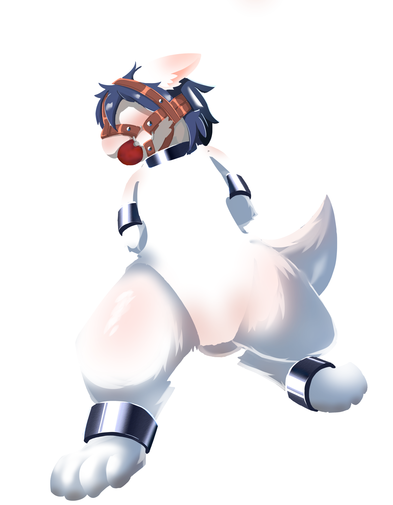
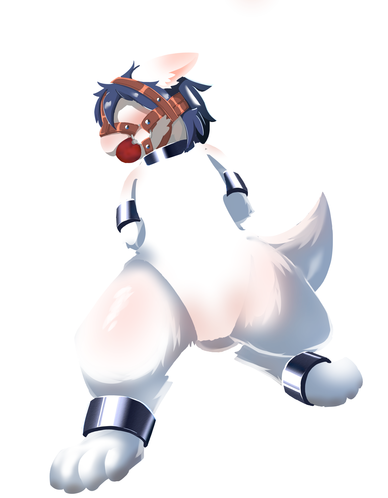
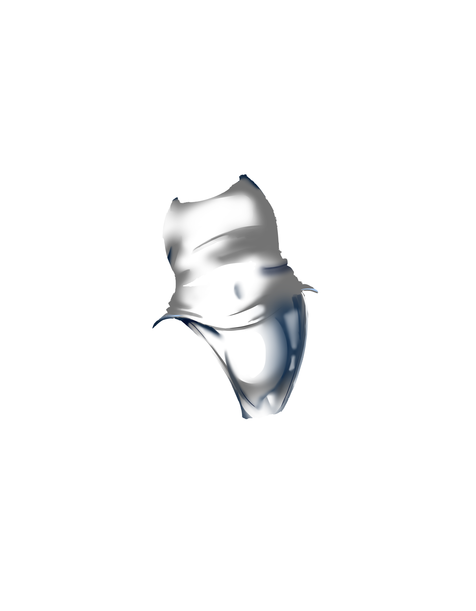
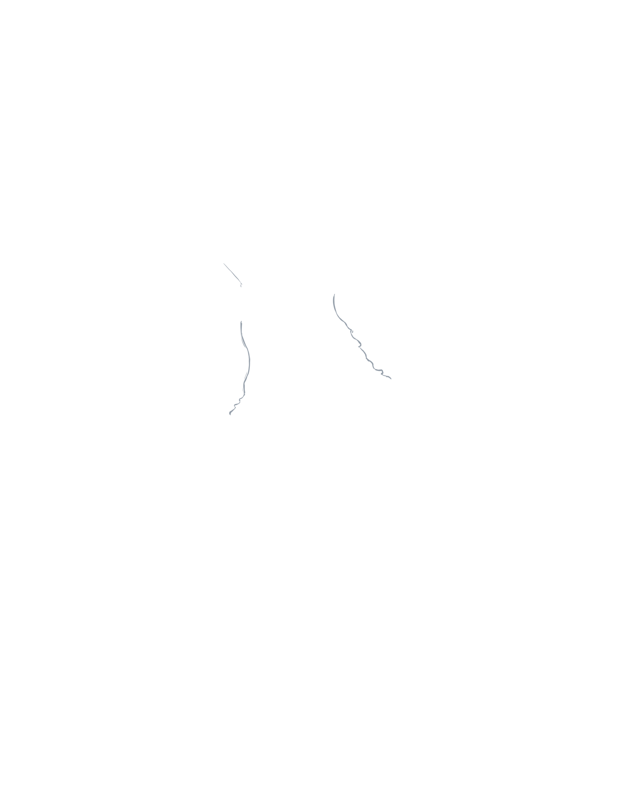
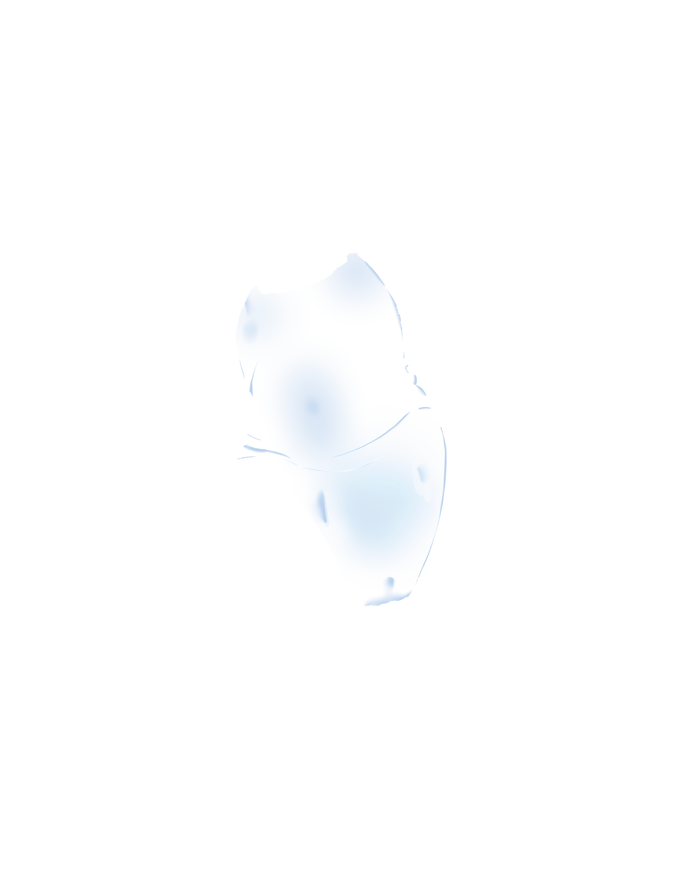
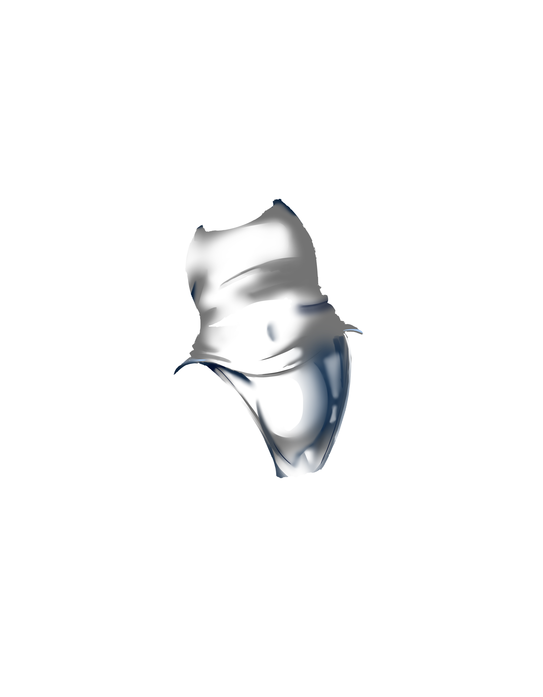
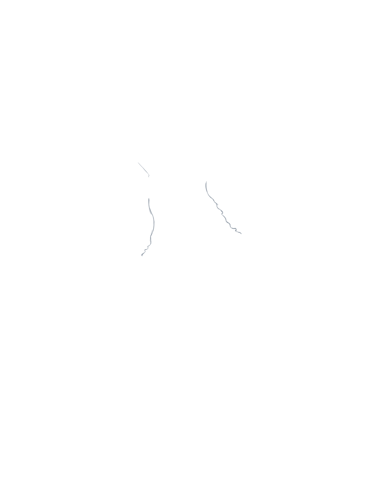
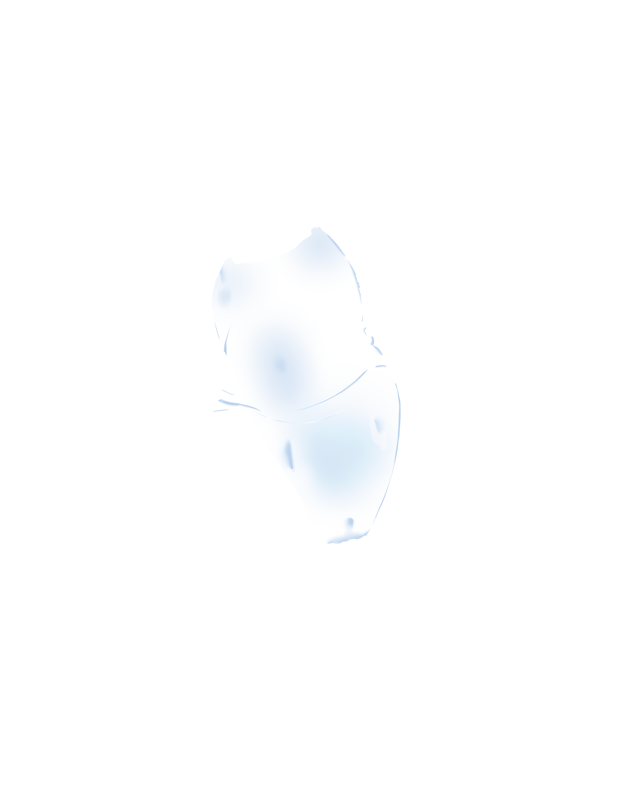

- 好きな配色でつかまったオリジナルけもりぅを作れます
You can create your original captured lumaire with your favorite color scheme
- URLをコピーして共有すると配色を共有できます
You can share your color scheme by copying and sharing the URL
- スクリーンショットを撮ã£ã¦ä¿å˜ã—ã¦ãã ã•ã„
Please take a screenshot and save it
- 作成した画像はCC BY-SA 4.0でライセンスされます。つまり、luhrck.comへのリンクを貼れば自由に改変、再配布できます。
The created images are licensed under CC BY-SA 4.0. This means you can freely modify and redistribute them as long as you provide a link to luhrck.com.
 

 




